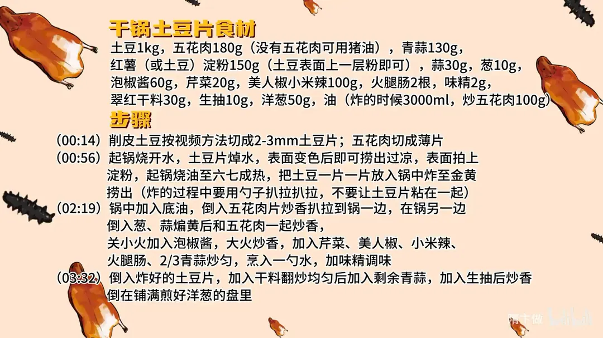

油辣干锅土豆
隋卞一做。土豆 1kg 切 2-3mm 片，焯水过凉后拍淀粉，六七成油温炸至金黄；五花肉 180g 煸香，下泡椒酱、干料与青蒜炒匀，土豆回锅，最后铺在煎香的洋葱上。
原视频：https://www.bilibili.com/video/BV1nj421d7CU
食材
土豆、五花肉、青蒜 等 15 样
| 类别 | 用料 | 用量 |
|---|---|---|
| 主料 | 土豆 | 1kg |
| 主料 | 五花肉 | 180g |
| 配料 | 青蒜 | 130g |
| 配料 | 蒜 | 30g |
| 配料 | 葱 | 10g |
| 配料 | 芹菜 | 20g |
| 配料 | 美人椒、小米辣 | 100g |
| 配料 | 火腿肠 | 2根 |
| 配料 | 洋葱 | 50g |
| 调料 | 泡椒酱 | 60g |
| 调料 | 红薯（或土豆）淀粉 | 150g |
| 调料 | 翠红干料 | 30g |
| 调料 | 生抽 | 10g |
| 调料 | 味精 | 2g |
| 调料 | 油 | 炸 3000ml、炒五花肉 100g |
步骤
- 切配：土豆 1kg 削皮，切成 2-3mm 的片；五花肉 180g 切成薄片。
- 焯水拍粉：起锅烧开水，土豆片焯水，表面变色后即可捞出过凉；表面拍上一层淀粉（红薯淀粉或土豆淀粉，表面薄薄一层粉即可）。
- 炸土豆：另起锅烧油至六七成热，把土豆片一片一片放入锅中，炸至金黄捞出，炸的过程中用勺子扒拉，别让土豆片粘在一起。
- 煸五花肉：锅中加底油，倒入五花肉片炒香后扒拉到锅一边，在锅另一边倒入葱、蒜煸至微黄，再和五花肉一起炒香。
- 炒香配料：关小火加入泡椒酱，转大火炒香，加入芹菜、美人椒、小米辣、火腿肠和 2/3 的青蒜炒匀，烹入一勺水，加味精调味。
- 合炒装盘：倒入炸好的土豆片，加入干料翻炒均匀，再下剩余的青蒜，加生抽炒香，倒在铺满煎好洋葱的盘里。
讲解要点
难度：★★★☆☆（土豆片厚薄要均匀，炸制和三种辣的叠加都靠手感）
为什么这么做
- 土豆切 2-3mm：太薄一炸就没了，太厚炸不透芯；这个厚度炸完外有脆壳、里面软面。
- 先焯水、过凉、再拍薄粉：焯水断生、过凉让表面收紧，薄粉挂得住，炸出来颜色和脆感都比直接炸好。
- 六七成油温、逐片下锅：油温够才能瞬间结壳、不进油；一片片下、用勺扒拉，才不会粘成一坨。
- 用五花肉的油炒：猪油把土豆片润透，香而不腻；没有五花肉就用大油。
- 肉拨到锅边、用油煸蒜葱：蒜葱借肉油煸到微黄，再让肉吸回这股香味，一举两得。
- 三种辣分层下：泡椒酱打底，美人椒、小米辣增鲜香，干料最后补辣，辣味才有前中后。
- 洋葱垫底：洋葱煎香后垫在盘底，土豆不直接贴盘，也不容易返潮。
容易翻车
- 土豆片切得太薄，下锅一炸就缩没了。
- 淀粉拍得太厚，炸出来发硬、还吸油。
- 一次下太多片，油温掉下来就粘连、不脆。
- 泡椒酱火大容易糊，要关小火下酱，再转大火炒香。
- 土豆回锅后炒太久会软塌，干料、生抽下完快速翻匀就出锅。
原片尾卡

原片文案
AI 字幕校准稿
我最近发现外星人了，只要是土豆做的菜，怎么做他们都爱吃。来吧，土豆星人最爱的菜之一：干锅土豆片。
土豆削皮，切片，斜着下刀——这样切可能不是很规矩，但在家里边吃着方便。厚度大约两到三毫米。
五花肉就随意点，切成薄片就行了。一定要用这个五花肉的油来炒，土豆片会更香一些；实在没有了，您就放大油炒。肉片、辣椒、青蒜，所有的小料都切完了。
锅里边做上干净水，烧开之后把土豆焯一下，土豆表面只要变色就可以了。然后把锅擦干净，倒上干净油。焯过水的土豆片稍微过一下凉，把淀粉拌上——土豆拍土豆淀粉，原汤化原食。拍成表面看着白白的，只要有淀粉就可以了，这样炸出来的土豆片，无论颜色还是酥脆感，都会比直接炸的好。
油温升到六七成热，手掰开一片一片地扔里面。好多观众说在家里面用这么多油会被妈妈揍——不是因为用这么多油，而是你用了这么多油做的还不好吃。不过咱这个油用完以后还是干净的。炸的时候拿勺扒拉扒拉，别让它粘在一块，炸到金黄金黄就可以了。一般炸的土豆片飘起来就熟了。
锅里放底油，把五花肉片倒进去，五花肉炒香以后把蒜倒进去。这个操作方法你们可以借鉴：把肉拨到边上去，用这个油来煸蒜，就不用扒拉这肉了，因为懒。你看把这蒜一定要煸黄，肉在边上，这样肉会把煸完的蒜和葱的香味吸得很足。
关小火炒泡椒酱，再转大火炒香。你看颜色多好看。下芹菜、美人椒、小米辣、火腿肠，青蒜放上三分之二。少来点水——这里加水是为了更好地吸味，然后加点味精调味。
把土豆片倒进去，下干料，剩下的青蒜，来点生抽，开火，出锅。
土豆软面，外面有一个薄薄的小脆壳，还不是那种硬脆，它被猪油的那个香给润透了。泡椒酱的那个辣、小米辣的那个辣、还有咱那个干料的辣，三种辣交织着上来，很好吃。爱土豆的人，这真的是爱疯了。
干锅土豆片，我印象当中好多师傅都有干锅酱的配方，但那个确实挺麻烦，不适合家里人。我可以跟你们保证，就按照今天的做法，味道绝对不比那个差，甚至你会更爱它。